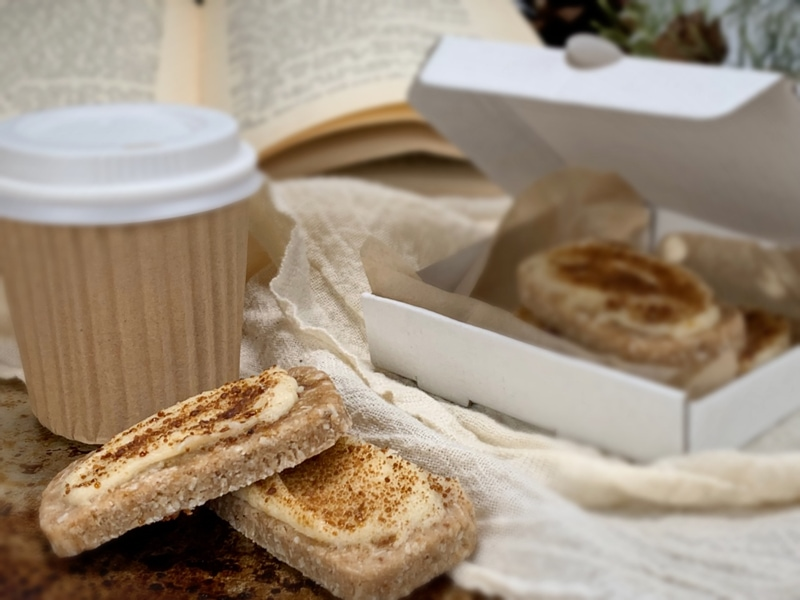
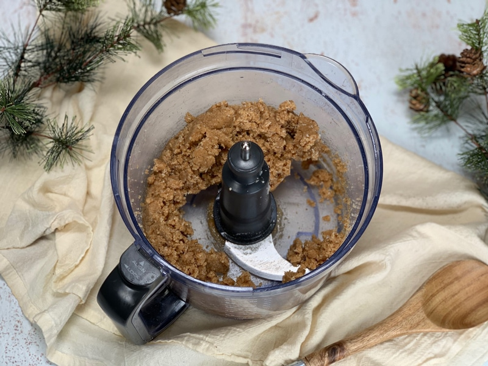
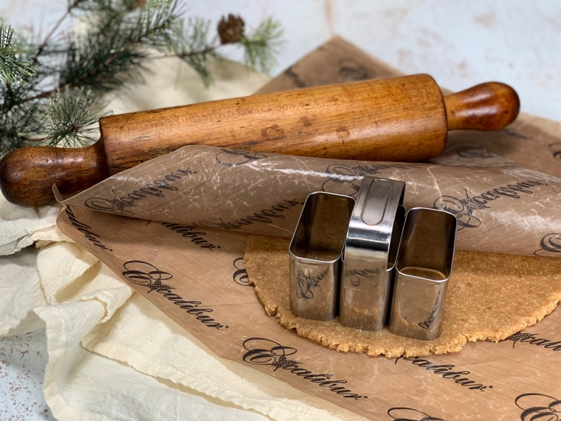
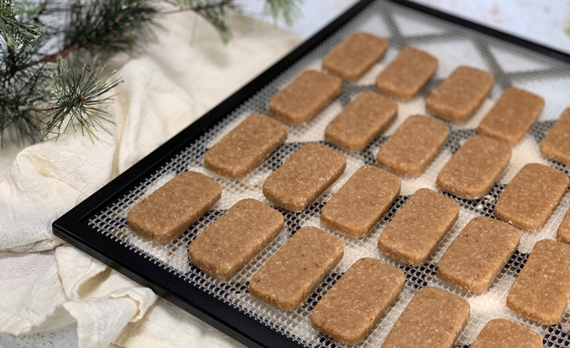
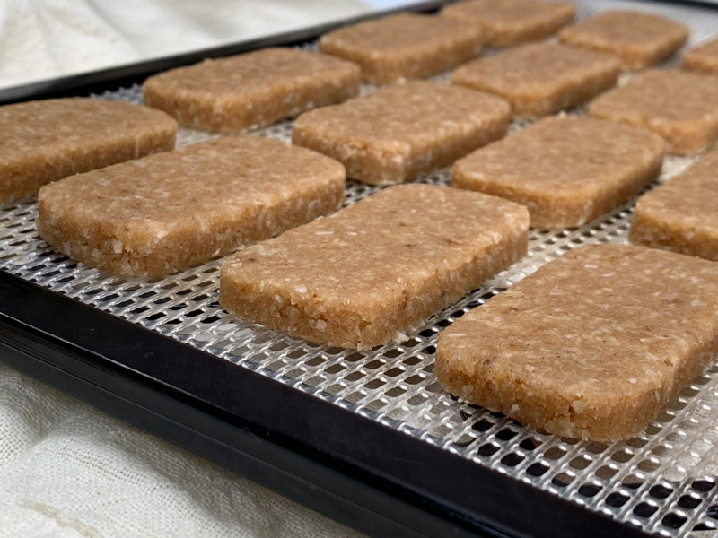
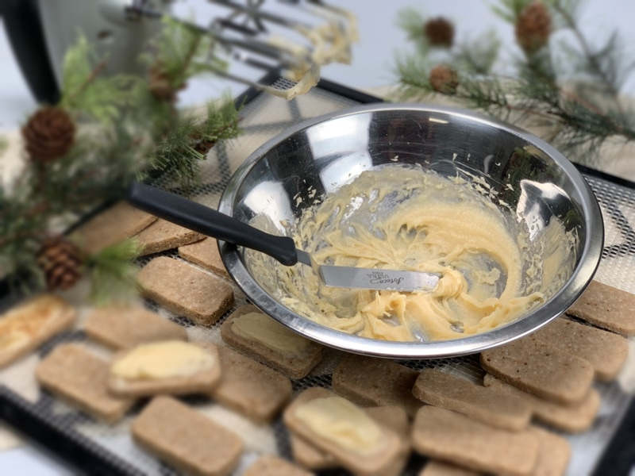

Brown Sugar Cinnamon Cookies with Honey Cream Icing

– raw, gluten-free, grain-free –
This cookie has become one of my all-time favorites. Not only in texture but also in flavor. With one tiny taste test, the first word that roared from my lips was, “Heaven”! They have a buttery, rich brown sugar taste in every single bite with a passionate kiss of cinnamon. Nope, not a hint, not a suspicion, and not an implication of cinnamon, but a passionate kiss of cinnamon! These simple Brown Sugar Cinnamon Cookies are undeniably impressive.

The key to this cookie is to use as fine a nut flour as you can. If you make your own almond flour, soak the nuts, pop the skins off and dehydrate. Then blend/process to a fine as powder. Take care that you don’t over process and end up with a nut butter.
You can also make a fine almond flour with nut pulp. Next time you make almond milk. pop the skins off after soaking them. Then proceed with making the milk. The pulp will be pure white. At this point, spread it out on a dehydrator sheet and dry at 115 degrees (F) until completely dry. Then grind to a flour.
I even took my shredded coconut to the next step by grinding it in a spice grinder until it became more flour like. Do not use already made raw coconut flour. This will be too drying for the cookie as it likes to absorb any and all moisture it can get its hands on.
Then there is the Honey Butter Icing. Be still my beating heart. It has a butter-like texture that will hold up to room temperature unless you like your house to be 78 degrees (F). Chances are at that temp, the icing will start to melt. The honey flavor is a perfect complement to all the wonderful flavors in the cookie. The cookies could stand alone and taste amazing naked but if you want to take them to over-the-moon-yummy, add the icing.
It is important to remember that you need to use “raw” honey for this recipe. Raw honey is has a rich viscosity that allows this icing to be creamy yet hold its shape. The cold-pressed coconut oil also helps to tighten up the texture as it tries to form back up to a solid state. If you chose to try another type of sweetener, the only other one that I would recommend is raw coconut nectar.
Ingredients:
yields 22 cookies
Cookies:
- 1 cup (115 g) raw almond flour
- 1 cup (115 g) raw cashew flour
- 1 cup (78 g) shredded coconut, powdered
- 2 Tbsp (20 g) raw coconut crystals
- 1 tsp (3 g) ground Ceylon cinnamon
- 1/4 tsp (1 g) Himalayan pink salt
- 1/4 cup (70 g) maple syrup
- 2 Tbsp (28 g) water
- 1 tsp (4 g) vanilla extract
Honey butter icing:
- 1/4 cup (80 g) cold-pressed coconut oil, melted
- 1/4 cup (75 g) raw honey, softened (maple syrup for vegan)
- 1/2 tsp (2 g) vanilla extract
- 1/8 tsp (<1 g) Himalayan pink salt
Sprinklers:
- Ground Ceylon cinnamon
- Raw coconut crystals
Preparation:
Cookies:
- In a large mixing bowl combine; almond flour, cashew flour, powdered coconut, coconut crystals, cinnamon, and salt. I actually ran mine through a sifter to make sure everything was well mixed and fine.
- In a small bowl stir together the agave, coconut oils, and vanilla extract. Pour into the dry ingredients and mix the batter together with your hands.
- Place the batter on a teflex sheet that comes with the dehydrator or parchment paper.
- Shape into a ball and place another teflex sheet on top.
- Roll the cookie batter out to about 1/4”. I used a square cookie cutter. You can also just score the dough with a long ruler into square shapes. Whatever you find the easiest. I chose a cookie cutter to ensure that all the cookies would be the same size.
- Place the cookies on the mesh sheet that comes with the dehydrator and dry at 145 degrees for 1 hour, then reduce to 115 degrees (F) for about 16 hours.
- As the cookies cool to room temperature they firm up even more. They are not crunchy hard but very firm.
- The time will always depend on the climate you live in.
- High humidity will keep the cookies more on the soft side.
Honey butter icing:
- To soften the coconut oil and honey, place the jars in a sink filled with hot water.
- Be sure that the lids are on nice and tight. It will take about 10-15 minutes for it to soften, no need to melt it to a liquid.
- Place the coconut, honey, vanilla, and salt in a small bowl. I used a handheld mixer to whip the icing together. If you don’t have one, you can use a fork, just have a little patience to make sure that the oil gets mixed in really well. The mixer will help give it a “fluffier” texture and is more light cream in color.
- Spread the icing on top of the cookies. I used a piping bag, see photos below.
- Sprinkle extra ground cinnamon and raw coconut crystals on top.
Culinary Explanations:
- Why do I start the dehydrator at 145 degrees (F)? Click (here) to learn the reason behind this.
- When working with fresh ingredients it is important to taste test as you build a recipe. Learn why (here).
- Don’t own a dehydrator? Learn how to use your oven (here). I do however truly believe that it is a worthwhile investment. Click (here) to learn what I use.
-

-
This is what the dough texture looked like after processing it.
-

-
I rolled it out between two dehydrator sheets and used a cookie cutter to create shapes.
-

-
I then placed them on the mesh sheet that comes with the dehydrator.
-

-
Just a close up to show you the thickness that I made them.

Whip the icing ingredients together and spread on each cookie. Sprinkle a little coconut sugar on top! Enjoy!
© AmieSue.com